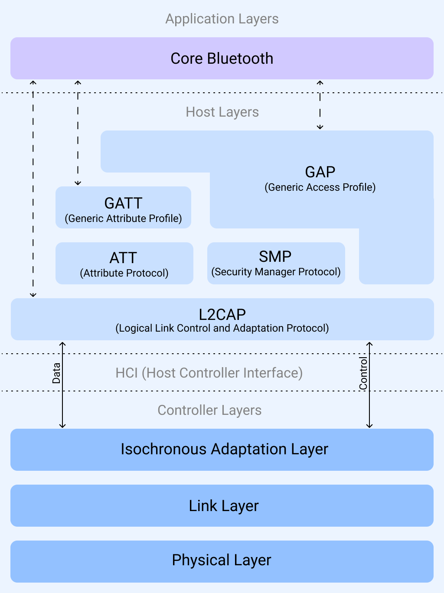

(Evil)Doggie over Bluetooth
In this note we will cover how and why we implemented BLE for (Evil)Doggie instead of using other Bluetooth solutions like Rfcomm or L2CAP CoC. This doesn't mean that future implementations of Bluetooth can't be done by the community, and we encourage the reader to try it. For time restrictions we had to focus only on one implementation.
First of all, I would like to remark something: Doggie was made with one idea in mind, to be as flexible as we could, speaking in terms of use and compatibility. With that in mind, we chose slcan (serial CAN Bus) protocol, as it is the most compatible driver for CAN.
Having said this, the decision of using BLE NUS (Nordic-Uart Service) over a GATT server is clear: to be widely compatible with more hardware. Lets explain why.
Classic Bluetooth vs BLE
We use slcan that, as the name suggests, is a serial implementation of CAN. So the most straight forward incorporation of Bluetooth should be Rfcomm as it provides a serial communication over Bluetooth. But Rfcomm only supports Classic Bluetooth and not Bluetooth Low Energy. The problem is the compatibility with the microcontrollers we chose for Doggie. Using as an example the ESP32 and its variants, we can see that the BLE is supported for more microcontrollers than the Classic Bluetooth. This decision sacrifices performance over hardware compatibility.
| Device | Classic Bluetooth | BLE |
|---|---|---|
| ESP32 | Yes | Yes |
| ESP32-S2 | No | No |
| ESP32-S3 | No | Yes |
| ESP32-C2 | No | Yes |
| ESP32-C3 | No | Yes |
| ESP32-C6 | No | Yes |
| ESP32-H2 | No | Yes |
| ESP32-C5 | No | Yes |
| ESP32-P4 | No | No |
L2CAP CoC vs NUS
After selecting BLE we had another decision to make, as there are two available options. The first one is using the lower layer of the BLE Host, L2CAP. This protocol can be used as a Channel-Oriented connection, as it provides a channel with two ends for communication between devices. Using L2CAP allows to avoid all the upper layers of the stack reducing the overhead in communication. But, the problem with L2CAP is the lack of compatibility with existent tools, specially on Windows. Hence, we chose the other option: NUS.

NUS (Nordic-Uart Service) is a GATT Service used to receive and write data serving as bridge for UART interfaces. And as we need a serial interface, it fits. Using NUS sacrifices performance and connection stability but allows the use of existing tools even on Windows, increasing the compatibility. The service presents the following characteristics:
Service UUID
The 128-bit vendor-specific service UUID is 6E400001-B5A3-F393-E0A9-E50E24DCCA9E (16-bit offset: 0x0001).
Characteristics
This service has two characteristics.
RX Characteristic (6E400002-B5A3-F393-E0A9-E50E24DCCA9E)
Write or Write Without Response
Write data to the RX Characteristic to send it to the UART interface.
TX Characteristic (6E400003-B5A3-F393-E0A9-E50E24DCCA9E)
Notify
Enable notifications for the TX Characteristic to receive data from the application. The application transmits all data that is received over UART as notifications.
Implementation
The BLE implementation is in /doggie_ble and is used as a separate crate for the hardware variants that support BLE. It depends on the trouble-host crate, witch is based on bt_hci.
Just as an extra, we can see the GATT Server definition:
#[gatt_server]
struct Server {
nus_service: NordicUartService,
}
/// Nordic UART Service
#[gatt_service(uuid = "6E400001-B5A3-F393-E0A9-E50E24DCCA9E")]
struct NordicUartService {
/// TX Characteristic - used to send data to central (notify)
#[characteristic(uuid = "6E400003-B5A3-F393-E0A9-E50E24DCCA9E", notify, read)]
tx: Vec<u8, MAX_CMD_LEN>, // Maximum BLE packet size for data
/// RX Characteristic - used to receive data from central (write)
#[characteristic(
uuid = "6E400002-B5A3-F393-E0A9-E50E24DCCA9E",
write,
write_without_response
)]
rx: Vec<u8, MAX_CMD_LEN>,
}
We made two structs and a function called BleSerial, BleServer and create_ble_pipe. This makes it easier to port BLE to other hardware variants. The only requirement is to implement a Controller, run the BLE server on a separate task and then just use the BleSerial as a serial interface.
let connector = BleConnector::new(init, peripherals.BT);
let controller = ExternalController::new(connector);
let (ble_server, ble_serial) = create_ble_pipe();
let _ = select(
ble_server.run(controller),
async {
let mut buffer = [0; 255];
loop {
let size = ble_serial.read(&mut buffer).await.unwrap();
ble_serial.write_all(&buffer[0..size]).await;
}
}
).await;
Usage
The implementation is compatible with a lot of different UART-BLE programs for different platforms. For PC, we recomend ble-serial, a Python module that allows to create a virtual port bridged with BLE.
To use it, first we install the package
$ pip install ble-serial
Then you should be able to discover a device with name Doggie BLE:
$ ble-scan
Started general BLE scan
28:CD:C1:04:D7:E3 (rssi=-62): Doggie BLE
And finally, create the bridge using the mac address of the Doggie BLE device
$ ble-serial -d 12:00:3B:01:B2:A5 -t 10000
10:38:57.733 | INFO | linux_pty.py: Port endpoint created on /tmp/ttyBLE -> /dev/pts/4
10:38:57.733 | INFO | ble_client.py: Receiver set up
10:38:57.938 | INFO | ble_client.py: Trying to connect with 12:00:3B:01:B2:A5: esp32c3
10:38:59.627 | INFO | ble_client.py: Device 12:00:3B:01:B2:A5 connected
10:38:59.628 | INFO | ble_client.py: Found write characteristic 6e400002-b5a3-f393-e0a9-e50e24dcca9e (H. 2)
10:38:59.628 | INFO | ble_client.py: Found notify characteristic 6e400003-b5a3-f393-e0a9-e50e24dcca9e (H. 4)
10:38:59.699 | INFO | main.py: Running main loop!
You should see in the logs that the program creates a virtual interface (in this case /dev/pts/4), you can now use that interface as a serial CAN.